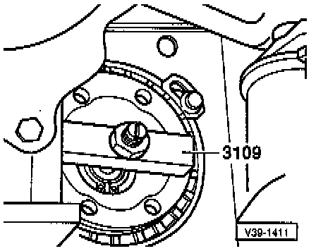

Seals and Gaskets: Service and Repair
NOTE: Transmission installed- Disconnect drive shaft from drive flange.
When Replacing Right-hand Oil Seal:
- Remove balance weight.
- Lay drive shaft to one side and secure.
When Replacing Left-hand Oil Seal:

- Mark installation position of ball joint/control arm mounting bolts and:
- Remove outer bolts (arrow A),
- Loosen inner bolt (arrow B).
- Turn steering to right, full lock.
- Swing ball joint out and place left-hand drive shaft to one side.
- Pierce sealing cap in drive flange with a screwdriver and pry out.

- Mount installation tool 3109 and remove circlip.

- Pull off drive flange with VW 391.
NOTE: On vehicles with flange for Tripod drive shaft the joint flange is removed with Kukko 18-0 puller and two 8 x 35 mm bolts with 8 mm diameter washers.
- Pull out drive flange oil seal with VW681.

- Pull new oil seal in up to stop with press piece 3319, 10 mm threaded rod (approx. 80 mm or 3 1/4 inch long) and nut with washer.
- Fill space between seal and dust lip with multi-purpose grease.
- Install drive flange, dished washer and circlip.

- Pull drive flange in.
NOTE: Drive flange can also be pulled in with VW 391.
- Install circlip and seal drive flange with cover.
- Install drive shaft.
- Reconnect ball joint to control arm.
- With transmission installed, check final drive oil level, refer to Checking Oil Level.
- Tighten the following components to:
Drive shaft to drive flange: 45 Nm (33 ft lb)
Ball joint to control arm: 35 Nm (26 ft lb)